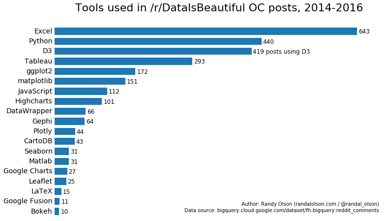

V is for Visualization
One of the most important aspects of data science is being able to effectively communicate and use your data to tell a story. Often you’ve spent a lot of time and effort cleaning your data, training models, and exploring your data. Visualizing your data is a crucial aspect of being able to tell that story and show off any insights you might have gained. You should always keep the following questions in mind:
- Who is your audience? Are they other data scientists? Subject matter experts? Other stakeholders (e.g. executives)?
- What are you trying to convey? It’s worth thinking of visualizations as representations of one aspect of your dataset. Try to make sure you are clearly communicating one aspect/concept.
- Are your visualizations easy to understand?. You’ve probably spent the most amount of time exploring your data. For people who are less familiar, they need to be able to quickly understand what you are showing. You don’t want people to dismiss the rest of your hard work because of some boring or complicated visualizations.
How do you make an effective visualization? One of the first questions you need to ask is what type of data you have.
Types of data
There are two broad categories of data, quantitative and qualitative, and each have a couple sub categories.
Quantitative
This is numeric data and represents something like a measurement or a count. There are two subtypes
- Continuous: Here we can have an infinite number of values (e.g. 2, 5.983, 8749). Good examples of continuous data include height, temperature, and average selling price. WIth continuous variables you can compute statistics such as mean, median, standard deviation etc.
- Discrete: These are still numbers but can’t be meaningfully divided into smaller chunks. For example, you can have 1 or 2 children but not 1.5 children. However, you can still compute statistics such as mean or standard deviation. You could say the average household had 1.54 children.
Qualitative
Qualitative data is something that can be categorized based on traits/characteristics (as compared to numbers).
Categorical: Categorical data is data that fit into a finite number of categories that have no inherent ordering. Colours (blue, red, green) are classified as categorical data because one colour is not inherently better than another.
Ordinal: Ordinal data is a type of categorical data with at least three categories. As you might guess from the name there is an inherent order. A good example of ordinal data is agreement data (strongly disagree to strongly agree) commonly found in surveys.
Here are some general rules of thumb for plotting different data types:
- If you have categorical data use a bar chart (especially if you need precise comparisons!). For example, here is a plot comparing the most frequently used tools on the DataIsBeautiful subreddit.

- Use a scatterplot or line plot if you’re comparing two quantitative variables. Here’s a plot comparing NBA/NCAA shooting accuracy vs distance from the basket.
- If you have qualitative data (or multiple comparisons in quantitative data) add extra attributes to visually distinguish between data types. You should also not just rely on colour (as some people have trouble distinguishing between colours). For example, texture (making your points dotted or striped) is very effective for categorical data as it provides a visual marker to differentiate between your categories. But this is not effective for quantitative (i.e. is striped bigger than dotted?). Keep these attributes in mind the next time you are making a plot, and think about what is the best way to represent your underlying data.
- If you need to communicate uncertainty in measurements, you will need to add error bars
Of course there are many more chart types than histograms, bar charts, scatter plots, and line charts. It’s important to consider the type of data you are plotting as well as your audience. For example, a violin plot can be enlightening for other data scientists but might not be as intuitive for other people.
Plotting libraries
There are loads of plotting libraries (as shown in the graph above) but here are a few of my favourites (mostly Python libraries):
- Matplotlib is extremely powerful but there can be a pretty steep learning curve. Fortunately there are many libraries that wrap matplotlib but still let you dive into it when needed. Pandas plotting is one such wrapper.
- Seaborn also wraps matplotlib and has a lot of great functionality. For example, pairplot will create a plot for every pair of variables in the dataframe you pass it.
- ggplot2 is an R library which is very powerful and can make very nice looking plots.
- Bokeh lets you make interactive plots in Python and is particularly handy when using Jupyter notebooks
Things to consider
Once you’ve decided on what concept you want to convey and picked the appropriate chart type, there are a few other things to consider.
- Check that your colour scheme works for both your data and the platform you’re presenting it on. For example, if you’re presenting categorical data, don’t use 7 shades of blue. Your chart might look great on your 5K display at your desk but could look washed out and hard to decipher on the projector screen when you’re giving a presentation.
- Ensure your axes make sense. Your axes don’t always need to start from zero. In fact you should zoom in if you want to show data fluctuation more precisely. Just don’t make your graph look like this
- Be careful about using logarithmic axes. For the right audience (who are used to interpreting them) they can be okay but you need to make it clear that it’s a nonlinear scale. You can try normalizing your points to the mean instead.
- Avoid overplotting. Overplotting is when data or labels in a visualization overlap so it can be hard to distinguish individual points. Try making your points semi-transparent or hollow circles so that it makes it easier to see specific points.
Summary
Effective visualizations can help you deliver a story about your data/models and any insights that you’ve found. In addition to convincing stakeholders/clients, they can be extremely helpful in exploratory data analysis to convince yourself about your understanding of the data. There are many things to consider (and it’s easy to make misleading charts) when creating a visualization but it’s worth getting it right.